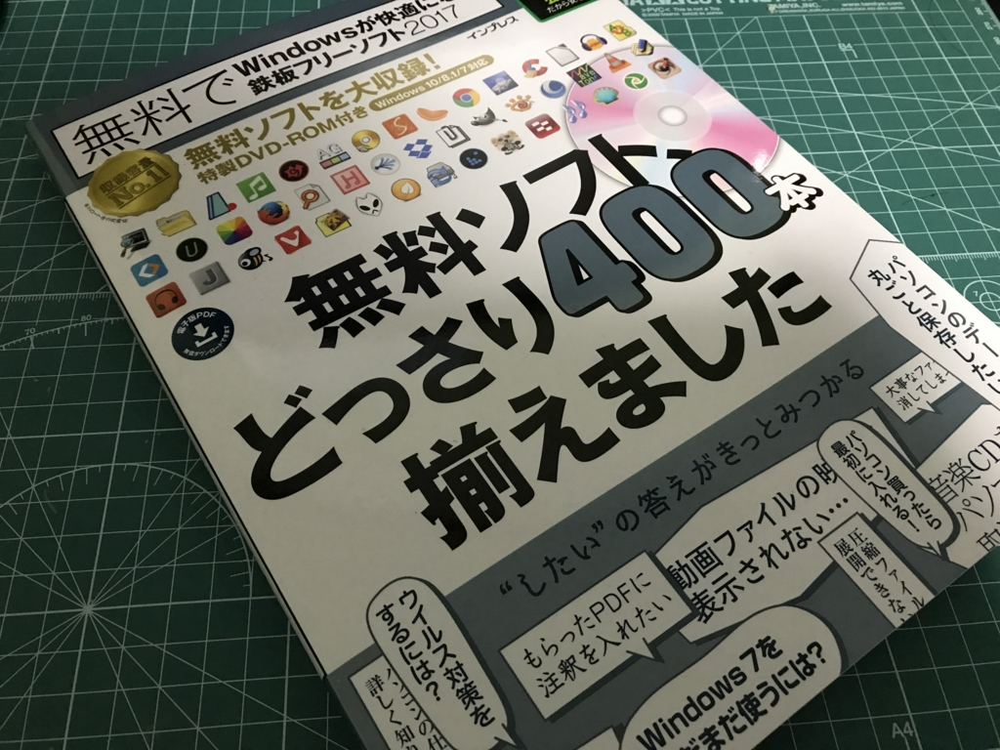

『無料で Windows が快適になる鉄板フリーソフト2017』が発売されているようです
執筆日時：

窓の杜在籍時代に書いた記事の掲載許諾をいただきたいという連絡をいただいたので（ご丁寧にありがとうございます！）、許諾ついでに見本紙をいただいちゃいました。自分はよく知らないのですが、書籍なのでパワレポとか出している部署が担当なのでしょうか、流石、ちゃんと Kindle 版まであるんですね……知ってたらわざわざ高い紙の見本紙を要求するなんて厚かましいことしなかったのに！（笑
内容は……懐かしいソフトもあれば、「まだあるんだ」みたいなソフトもあり、かと思えば自分も知らないようなソフトも載っているので、右も左もわからない人はもちろん、こういう業界が好きな人にも楽しめる感じになっているのではないでしょうか。そんなに隅から隅まで読んでないので知らんけど。かつてはこういう“フリーソフト（フリーソフトウェアだとは言っていない）を集めたムック”って割と刊行されてた気がするんですが、“窓の杜公式”っていうのは初めて聞いたかも？ 個人的には
「窓の杜公式だから安心！」
なんて書かれているのが、元中の人として多少不安に感じるのですが……いえ、ちゃんと厳選してるだろうし、ウイルスチェックもやっているはずで*1安心ではあるんですけど、世の中“確実”などと言えることはないわけで。まぁ、でも、中の人にはこれからも“安心！”と言えるように頑張り続けてほしいなーと思います。

無料でWindowsが快適になる鉄板フリーソフト2017「窓の杜」公式
- 作者: 窓の杜編集部,アイティースリー
- 出版社/メーカー: インプレス
- 発売日: 2017/03/29
- メディア: Kindle版
- この商品を含むブログを見る
しかし、窓の杜も長くやってますね。在籍時はよそのブログメディアがアングラっぽいソフトの紹介や真偽不明の噂で PV を稼いでそうなのを横目で見ながら、ちょっと羨ましいやら、悔しいやらって感じだったんですけど、外から見てる分には、そういうことには無縁な安心感はあって、これはこれでいいのかなとも思います。最近はなんか Windows 以外のこともちらほらツバつけてるみたいで、“窓”である意味あるんかいなって思わんでもないのですが、末永く続いてもらえればと思います。
*1:あれ、割と面倒くさいんですよ！